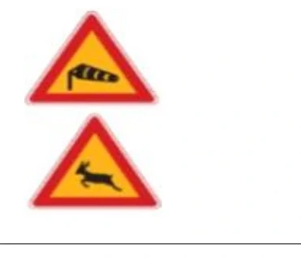

872. According to the Road Traffic Act and its Enforcement Decree, which of the following is categorized as a warning sign as in the given picture?

- ①Uphill sign, usual traffic congestion area sign
- ②Vehicle width limit sign, keep distance sign
- ③Tram-only road sign, bypass sign
- ④Unprotected left-turn sign, left-turn and U-turn sign
Show answer
Answer
① Uphill sign, usual traffic congestion area sign
Reference
Road Traffic Act Enforcement Rules Annex 6, cross wind sign (Caution Sign No. 137), wild animal protection sign (Caution Sign No. 139) ① Uphill slope signs and habitually congested section signs are caution signs. ② Vehicle width restriction signs and vehicle distance securing signs are regulatory signs. ③Tram exclusive road signs and bypass road signs are instruction signs. ④ Unprotected left turn signs and left turn and U-turn signs are instruction signs.
Reference text is a machine translation for study.